Automatic Revision
of Ecological Theories
Motivation
Species Richness/Speciation Relationship
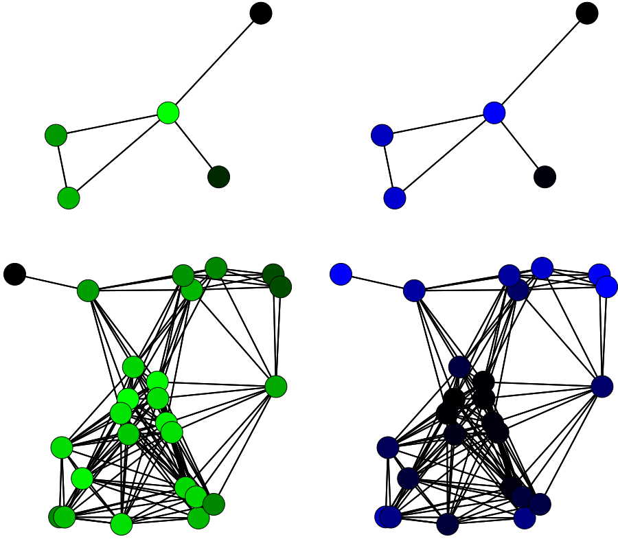Species richness (green) and speciation events (blue) on simulations with 5 (top) and 25 (bottom) communities.
The Big Picture
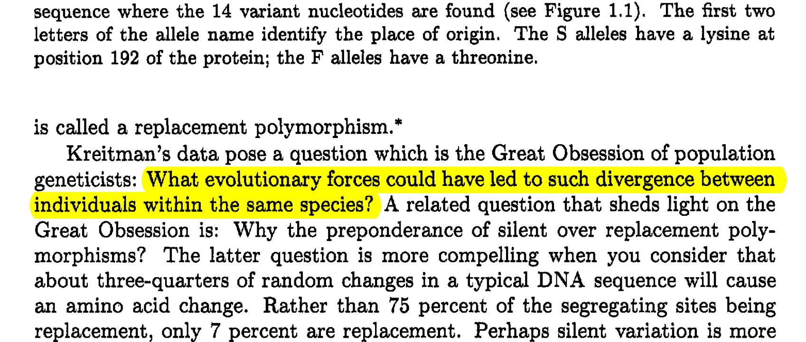Reference: JH Gillespie. Population Genetics: A Concise Guide, 1st edition. Johns Hopkins University Press, 1997.
Why Biodiversity is so Complicated?
The effect of mutations vary greatly across the genome.
Selection varies in time/space as the biotic/abiotic environment changes.
The influence of linkage and recombination.
Speciation has a complex spatial structure.
What if there is no
single theory of biodiversity?
What if the problem is to reason
about a set of ecological theories?
Two Key Questions
How can we formally represent ecological theories
(a different question that how to think about data)?
How can we exploit this formal representation
(inference, discovery and revision of theories)?
In practice, these questions lead to knowledge representation and machine learning.
Knowledge Representations
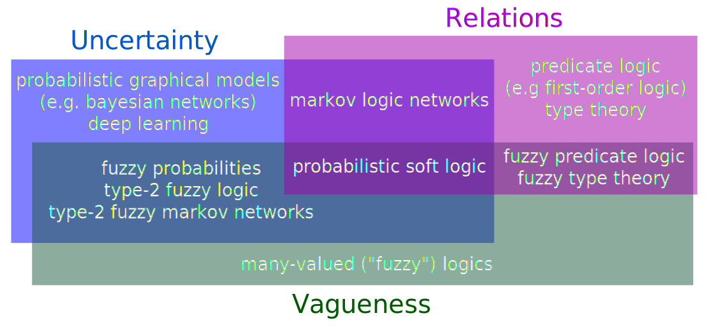Machine Learning

Two main types: supervised learning, unsupervised learning.
Reference: KP Murphy. Machine Learning: a Probabilistic Perspective. MIT Press, 2012.
Supervised Learning
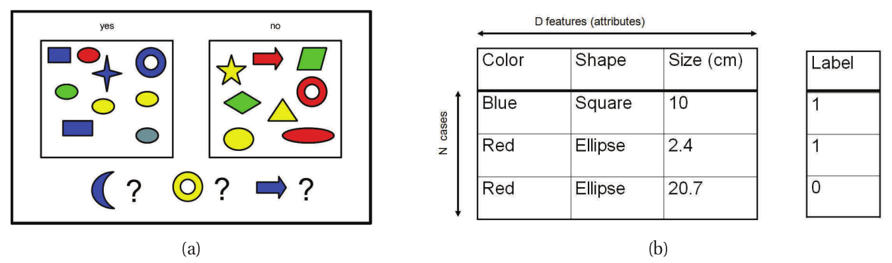Given data points \(\mathcal{D} = \{(\mathbf{x}_i, y_i)\}_{i = 0}^{|\mathcal{D}| - 1}\), learn to predict \(y\) from \(\mathbf{x}\).
Tasks: classification, regression.
Unsupervised Learning
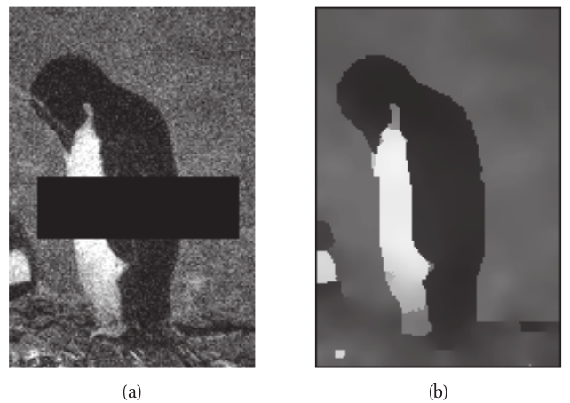
Given data points \(\mathcal{D} = \{(\mathbf{x}_i)\}_{i = 0}^{|\mathcal{D}| - 1}\), learn some 'hidden structure'.
Tasks: matrix completion, clustering, structure learning.
A Knowledge Base
for Ecological Knowledge
Domains: species \(s, s_i, s_j \in S\), locations \(l \in L\), time \(t \in \mathbb{R}\).
Symbols: universal quantifier (forall) \(\forall\), negation \(\neg\).
\[\forall s_i, s_j: PhyloDistance(s_i, s_j) > 0, \infty.\] \[\forall s_i, s_j: \dot{x} = \alpha s_i - \beta s_is_j \mbox{ and } \dot{s_j} = \delta s_is_j - \gamma s_j, 0.01.\]
...
\[\forall s, l, t: SmallN(s, l) \Rightarrow N(s,l,t+1) = G(s) \times N(s,l,t), 0.14.\] \[\forall s_i, s_j, l: KNN_5(s_i, s_j) > 0.5 \Rightarrow PreyOnAt(p, q, l), 2.5.\]Ecological Interactions as a
Machine Learning Problem
Predict whether \(x\) interacts with \(y\) given traits for both species.
Fill holes in an interaction matrix (matrix completion).
Discover or revise logic and mathematical rules about interactions given data.
Interactions assumed to involve only two species. A non-interaction is often implied by lack of observed interaction.
Why Ecological Interactions?
A key reason why selection is difficult to handle with traditional theories is because of the complexity of species interactions.
My lab is studying interactions. I had access to both good data-sets and people who understood them well.
Machine Learning and Interactions Roadmap
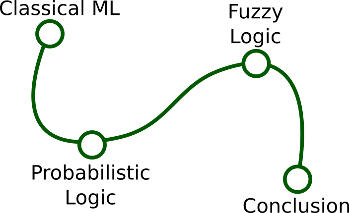Classical Machine
Learning
Data
- Assembled by Isabelle Daigle, mostly from Digel et al. (2014).
- 881 species.
- 34 193 unique interactions.
- 3 real valued-traits: \(body mass\), we also performed principal coordinates analysis on taxonomic distances, and use the scores of each species on the first two axes \(Ph_0\), \(Ph_1\).
- 25 binary traits (e.g. AboveGround, Detritivore, Bacteria, Jumps, LongLegs, UsePoison).
Supervised Learning & Recommender
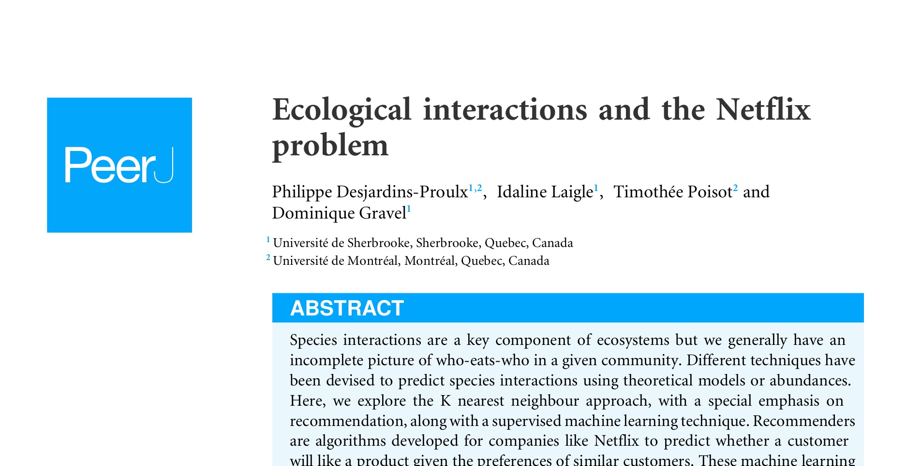True Skill Statistic
\[TSS = \frac{(tp \times tn) - (fp \times fn)}{(tp + fn)(fp + tn)}.\]With:
- tp: true positives
- tn: true negatives
- fp: false positives
- fn: false negatives
The TSS ranges from -1 to 1.
Supervised Learning

Using the binary and real-valued traits of both species as features.
Tested several methods: random forests, support vector machines, decision trees.
Recommendation
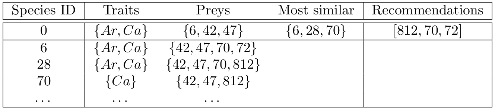Results: Supervised Learning
Random forests predict correctly 99.55% of the non-interactions and 96.81% of the interactions, for a TSS of 0.96.
Removing the binary traits has little effect on the model. With only \(body mass\), \(Ph_0\), \(Ph_1\) (the first two axes from a principal coordinates analysis on taxonomic distances), the TSS of the random forest is 0.94.
Results: Recommendation
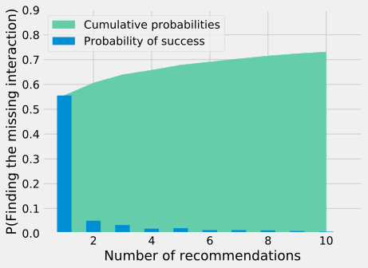Bartomeus' Pollinator-Plant Data-Set
- Plant-pollinator interactions were collected across 16 sites in the southwest of the iberian peninsula (Huelva and Seville).
- 65 pollinators.
- 277 plants.
- 739 pollinator-plant interactions.
- We randomly pick 739 pollinator-plant pairs that are not interacting to build a data-set of 1478 entries, half of interactions, half of non-interactions.
Matrix Completion
with the K-Nearest Neighbors (KNN)
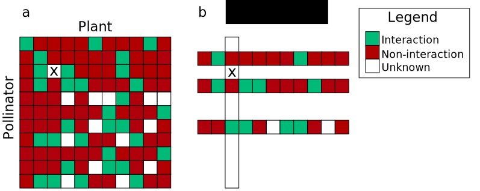
KNN with Threshold
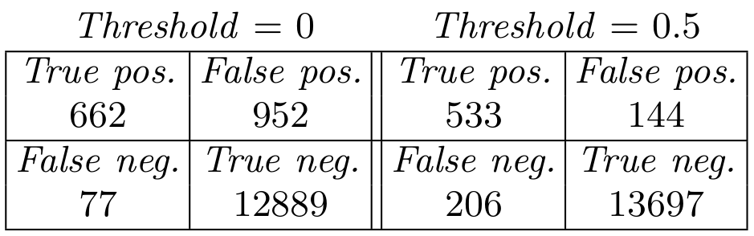Full confusion matrix for K = 3 and threshold of 0.0 and 0.5 (majority vote). The accuracies are of 0.929 and 0.975. TSS scores are 0.827 vs 0.710.
Classical Machine Learning & Interactions
- We confirm the old result that body mass is key to how interactions are structured (Williams & Martinez 2000).
- Phylogeny, combined with body mass, is an important feature.
- KNN-based algorithms exploit nestedness: how much species cluster around the same set of preys in a food web.
- Interactions are fairly easy to predict (TSS really close to 1).
- Binary traits contain little useful information.
Probabilistic Logic
Markov Logic
Knowledge base \(\mathcal{M}:\)
\[\forall x, y, z: Friends(x, y) \mbox{ and } Friends(y, z) \Rightarrow Friends(x, z), 0.7.\] \[\forall x: Smoking(x) \Rightarrow Cancer(x), 1.5.\] \[\forall x, y: Friends(x, y) \mbox{ and } Smoking(x) \Rightarrow Smoking(y), 1.1.\]Can answer queries of the form:
\[P(Cancer(Bob) | Smoking(Anna) \mbox{ and } Friends(Anna, Bob), \mathcal{M}, \mathcal{D}).\] \[P(Friends(x, y) \Leftrightarrow Friends(y, x) | \mathcal{M}, \mathcal{D}).\]Predicates are bivalent (true or false) but formulas are weighted. The cost is the sum of the weights of the rules violated by a given truth assignment (world).
Predicate Logic and Food Webs
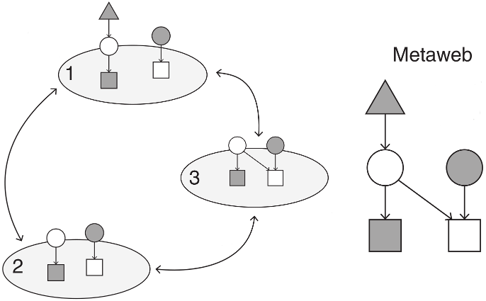Poisot et al. The dissimilarity of species interaction networks. Ecol Lett, 2012.
\[PreyOn(x, y), PreyOnAt(x, y, l), PreyOnInAbsence(x, y, z).\]
\[\forall x, y: PreyOn(x, y) \mbox{ and } \neg Parasite(x) \Rightarrow M(x) > M(y).\]
Salix Data-Set
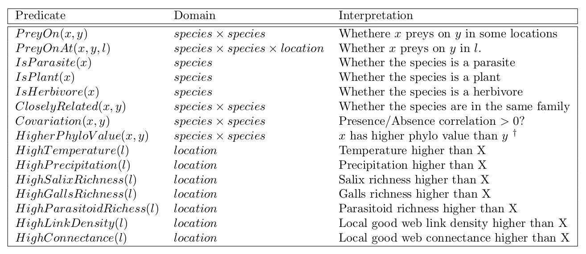 \[Parasites \rightarrow Galler \rightarrow Salix\]Learning Weights and Rules with Alchemy2
0: \(PreyOnAt(x,y,z) \Rightarrow PreyOn(x,y), 5.20.\)
1: \(HighCooccurrence(x,y) \Rightarrow PreyOn(x,y), 4.22.\)
2: \(IsGaller(x) \mbox{ and } PreyOn(x,y) \Rightarrow IsSalix(y), 4.15.\)
3: \(IsParasitoid(y) \mbox{ and } PreyOn(y,x) \Rightarrow IsGaller(x), 3.49.\)
4: \(PreyOn(x,y) \Rightarrow HighCooccurrence(x,y), 1.57.\)
5: \(PreyOn(x,y) \Rightarrow PreyOn(x,x), 1.52.\)
6: \(PreyOn(x,x) \Rightarrow PreyOn(x,y), 0.45.\)
7: \(\neg IsSalix(x) \mbox{ or } \neg PreyOn(x,y), 0.02.\)
8: \(CloselyRelated(x,y) \mbox{ and } PreyOn(x,z) \Rightarrow PreyOn(y,z), 0.00.\)
What Went Wrong?
Alchemy-2 has a slow (maybe inaccurate) L-BFGS implementation (i.e.: learning weights is slow).
Lessons from classical methods: real-valued variables are important.
What Went Wrong?
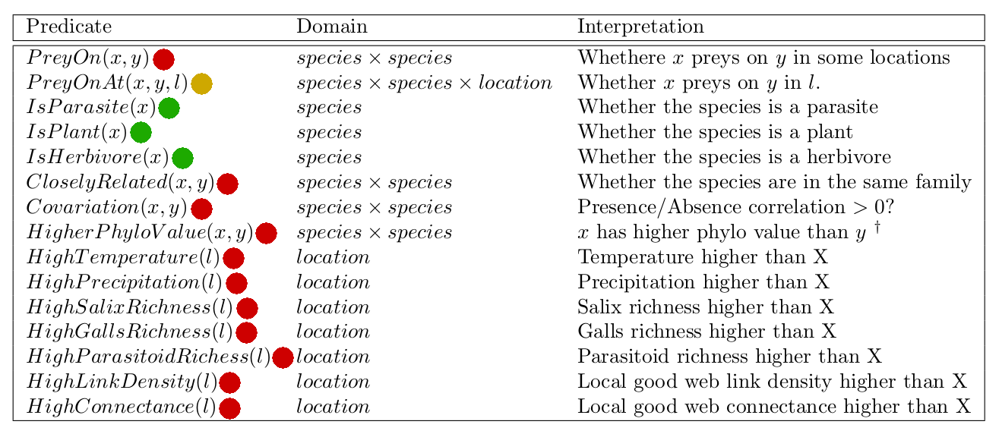In red: predicates that would benefit from being many-valued.
In orange: could be bivalent or many-valued.
In green: bivalent predicates.
Fuzzy Logic
Bartomeus' Pollinator-Plant Data-Set (Again)
- Plant-pollinator interactions were collected across 16 sites in the southwest of the iberian peninsula (Huelva and Seville).
- 65 pollinators.
- 277 plants.
- 739 pollinator-plant interactions.
- We randomly pick 739 pollinator-plant pairs that are not interacting to build a data-set of 1478 entries, half of interactions, half of non-interactions.
- Seven real-valued traits: Plant's nectar tube dimension, Plant's nectar tube depth, Plant's flower width, Pollinator's body size, Pollinator's tongue length, Pollinator generalism, \(K\)-nearest neighbour ratio.
Structure
\[\mathbf{If} \mbox{ } antecedants \mbox{ } \mathbf{then} \mbox { } consequents.\] \[\mathbf{If} \mbox{ } antecedants \mbox{ } \mathbf{then} \mbox { } consequents.\] \[\mathbf{If} \mbox{ } antecedants \mbox{ } \mathbf{then} \mbox { } consequents.\] \[...\]If Pollinator is specialist and Plant nectar tube dim is small then Interaction.
Linguistic Variables
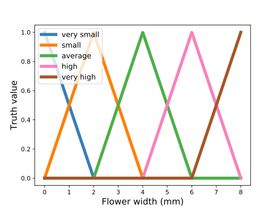If the flower width is 6.5mm, then "Flower width is High" has a truth value of 0.75, "Flower width is Very High" has a truth alue of 0.25.
Initial Model
- If KNN is high then \(I^+\).
- If KNN is low then \(I^-\).
\(I^+\) denotes an interaction, \(I^-\) a non-interaction.
Learning Rules
- Start with the two KNN rules.
- Randomly generate a rule, add it to the knowledge base.
- If the new knowledge base beats the old by \(\alpha\) TSS on the training set, keep the rule.
- Repeat #1-2 \(\phi\) times.
Starts with high acceptance threshold \(\alpha\), lower it with time.
C++14 code: https://github.com/PhDP/Manticore
Results
- If Plant nectar tube depth is average then \(I^+\).
- If Pollinator body size is small then \(I^+\).
- If KNN is high then \(I^+\).
- If Pollinator is specialist and Plant nectar tube dim is small then \(I^+\).
- If Plant flower width is average then \(I^+\).
- If Plant flower width is small and Pollinator tongue length is small then \(I^+\).
- If KNN is low then \(I^-\).
\(I^+\) denotes an interaction, \(I^-\) a non-interaction.
Results
| Model | TSS (10% testing data) |
|---|---|
| Fuzzy (initial model with two KNN rules) | 0.564 |
| Decision trees | 0.723 |
| Random forests | 0.795 |
| Fuzzy (after evolution) | 0.885 |
The scikit-learn Python package was used for decision trees and random forests. All algorithms used the TSS for training and testing.
Lessons
A few traits determine whether a pollinator will interact with a plant: nectar tube dimension, nectar tube depth, flower width, pollinator's body size, pollinator's tongue length.
Possible to learn and revise easy-to-read ecological theories of interactions.
The importance of real-valued variables for species interaction (again!).
Should explore genetic algorithms for learning (e.g. NSGA-II).
Conclusion
Two Key Questions
How can we formally represent ecological theories?
How can we exploit this formal representation?
In Brief
- Finding the proper knowledge representation for ecological theories remains an open question.
- Supervised learning algorithms (esp. random forests) can predict interactions with few real-valued traits.
- Fuzzy logic rules can predict pollinator-plant interactions with a few real-valued traits.
- A simple revision algorithm yields very good results for fuzzy logic.
- Markov logic has computational issues and is held back by its inability to handle nuanced predicates.